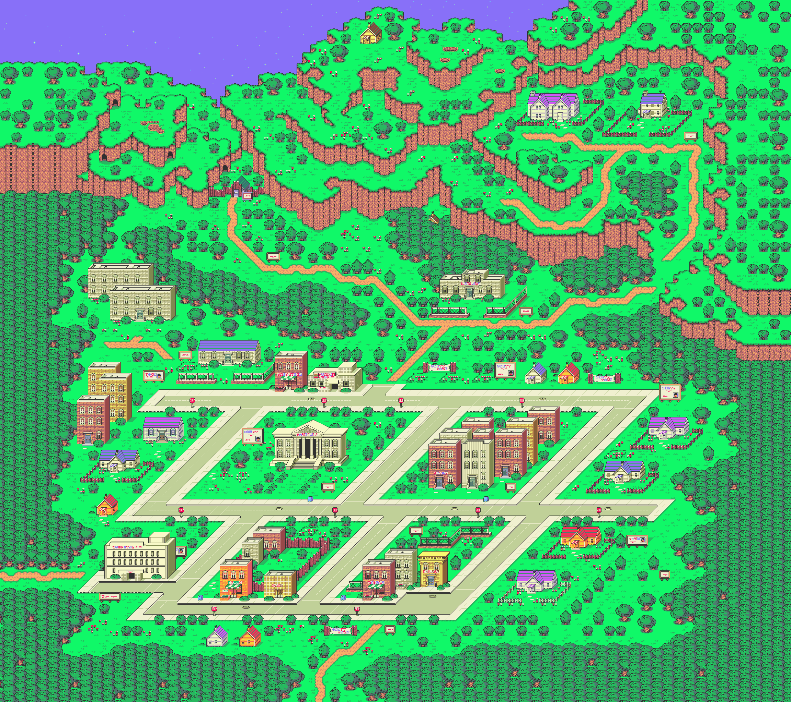

The Hilltop
Site of the famous 199X meteorite landing, now Onett's most popular viewpoint.
The Tourism Board accepts no liability for alien encounters, psychic phenomena, or unscheduled travel to other dimensions.
The place everyone starts out.

Every great trip needs a beginning. In Eagleland, you'll find it in the hills, in a quiet town called Onett. Browse the public library, grab a burger, or lose an afternoon at the arcade.
Onett is also the hometown of a boy named Ness. One night, a meteorite crashed on the hill above his house. He went up to take a look, and didn't come home for quite a while.
Most days, nothing much happens here.
Onett has a population of 3,500 people and two dogs, an average temperature of 72°F, and an annual rainfall of 10 inches.
Press play to hear the official music of Onett. The Tourism Board describes it as "the feeling of riding your bike home before dinner."
Site of the famous 199X meteorite landing, now Onett's most popular viewpoint.
Quiet, friendly, and free. Ask at the front desk for a town map. You'll be glad you did.
A lively spot for an evening out. Popular with local teens.
A cave in the northern hills, for experienced hikers only.
Burgers, fries, and a booth by the window.
Delivery available to almost anywhere.
Fresh bread every morning.
Clean rooms and a good night's sleep.
Wonderful neighbors, good schools, and plenty of fresh air. My son's always out exploring. I just wish he'd phone more.